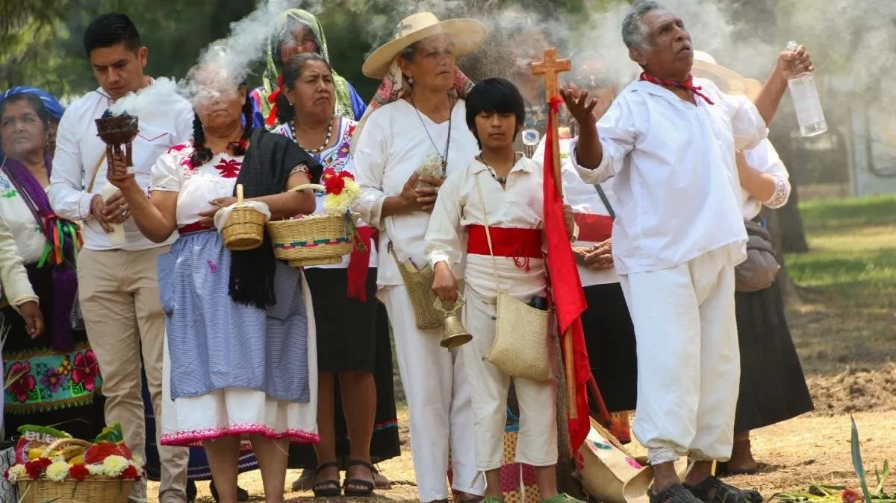

Durante generaciones , las comunidades indígenas han desarrollado sistemas de gestión de recursos naturales sostenibles y adaptados a sus entornos específicos ya que es una gran clave para poder lograr la conservación de la biodiversidad del medio ambiente ya qué rescata valores como respeto a la naturaleza y al territorio , pues permite enteder a mas profundidad la importancia de preservar el ecosistema y la responsabilidad con el respeto al medio ambiente , con esta información podremos comprender por que son tan importantes los pueblos indígenas para nuestro entorno y en que nos apoyarian para poder conservar a nuestra flora y fauna que tenemos en nuestro entorno.
Es un conjunto de saberes y técnicas vínculados con la explotación económica del suelo,esto es, con la producción de alimentos e insumos de origen vegetal. Implica procesos como la siembra,el cultivo y la cosecha. Se trata de una actividad perteneciente al sector primario,ya qué provee al mismo tiempo a la sociedad de materia prima y bienes acabados. Para ello acuden a diferentes metodos los cuales implican el uso de maquinaria y de otras herramientas mecánicas, químicas y biológicas. La producción agrícola es, junto a la ganadería una actividad clave de la economia de los paises, ya que permite alimentar a una población lo cual es de suma importancia esta actividad.
Para los pueblos indígenas si realizan diferentes actividades al momento de la cosecha ya que tienen tradiciones agricolas impregnadas de creencias y practicas rituales, no solo sustentaban la alimentación, sino tambien la cosmovisión y la organización social de estas culturas. En la actualidad muchas de estas practicas persisten,adaptadas a la modernidad pero conservando su esencia ancestral.
El maíz es mas que un cultivo en méxico; es el centro de la cosmovisión indigena. Según el "popol Vuh", el libro sagrado de los mayas los hombres fuerón creados a partir de masa de maíz. Esta planta no solo representa sustento, sino también vida y espiritualidad las comunidades indígenas, como náhualt y los zapotecos, realizan ceremonia para agradecer las cosechas y pedir lluvias, muchas veces ofreciendo mazorcas o productos derivados del maíz en altares dedicados a los dioses agrícolas, como Tlaloc (dios de la lluvia) y Centeotl (dios del maíz).
Algunas festividades mexicanas tienen un fuerte vínculo con la agricultura. por ejemplo:
♦ Dia de San Isidro Labrador (15 de mayo): Celebrado en varias comunidades rurales especialmente en el centro del pais, este dia honra al santo patrono de los agriculturas. Se organizan procesiones y bendiciones de semillas, herraminetas y animales buscando asegurar buenas cosechas.
♦ La milpa y el ciclo agrícola: En el calendario agrícola tradicional , las actividades en la milpa (sistema de maíz , frijol y calabaza) estan sincronizadas con celebraciones como el Xochitlalli o la "ofrenda a la tierra", donde se entierra ofrendas como flores y comida para fertilizar el suelo espiritualmente.
En regiones con climas secos como Oaxaca y Puebla,los rituales para atraer la lluvia son un práctica común y crucial para la agricultura de temporal uno de los rituales mas conocidos es la rogativa de la lluvia , donde los campesinos , acompañados de lideres espirituales suben a cerros considerados sagrados y ofrecen sacrificios (generalmente animales y alimentos) para invocar a Tlaloc o a las "animas de la lluvia".En algunos casos, las danzas y cantos tradicionales complementan el ritual.
Algunas comunidades creen que lo fenómenos climáticos extremos, como heladas o sequias , están relacionadas con desequilibrios espirituales o castigos divinos para contrarestar estos efectos, se realizan ceremonias como las "limpias del campo" o figuras simbolicas para espantar plagas y malas energias.